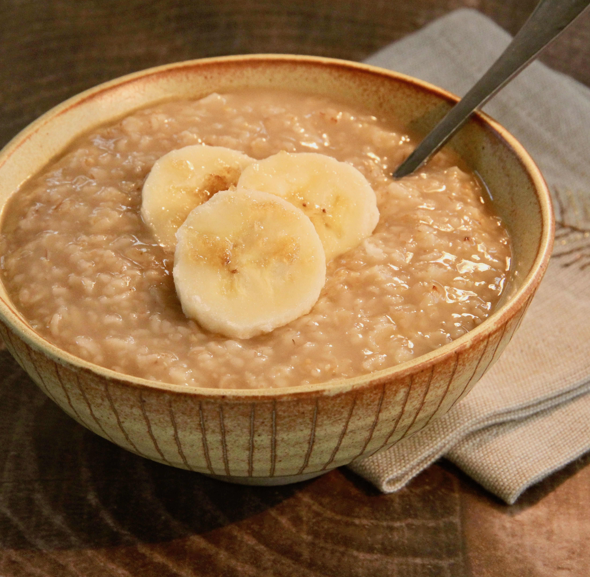

Maple and Brown Sugar Oatmeal

Description
A nice alternative to the store-bought packets of Maple and Brown Sugar Oatmeal that can be adjusted perfectly to your liking!
Ingredients
- 3/4 cup of quick oats
- 1 tbsp maple syrup
- 1 tbsp brown sugar
- 1 & 1/2 cup cup of water
Directions
- Bring water to a boil. Add oats and cook, stirring, for 1 minute. Remove from heat and stir in brown sugar and maple syrup. Let sit until desired thickness is reached, 2 to 3 minutes.